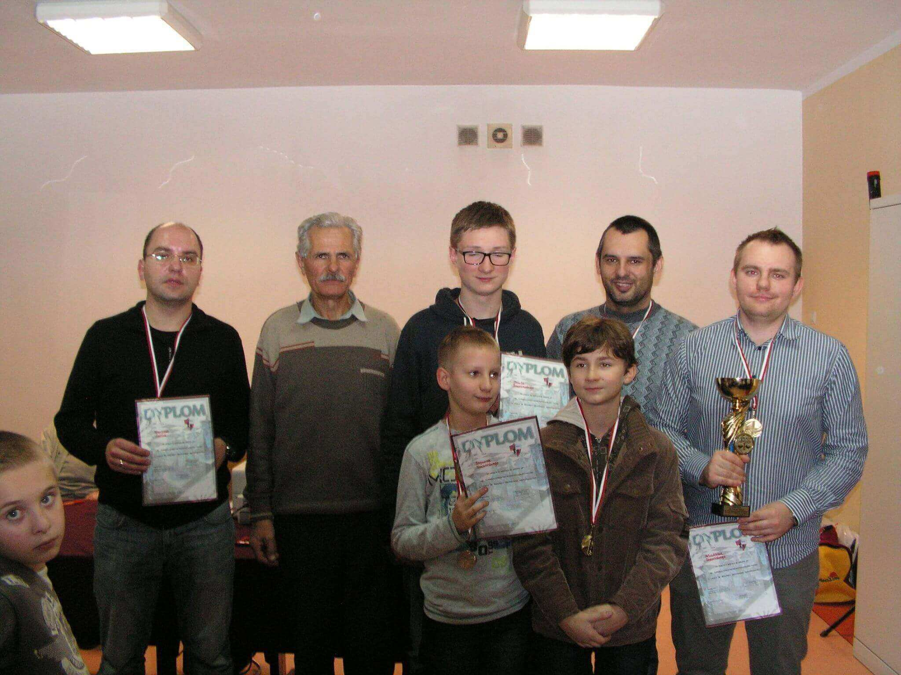
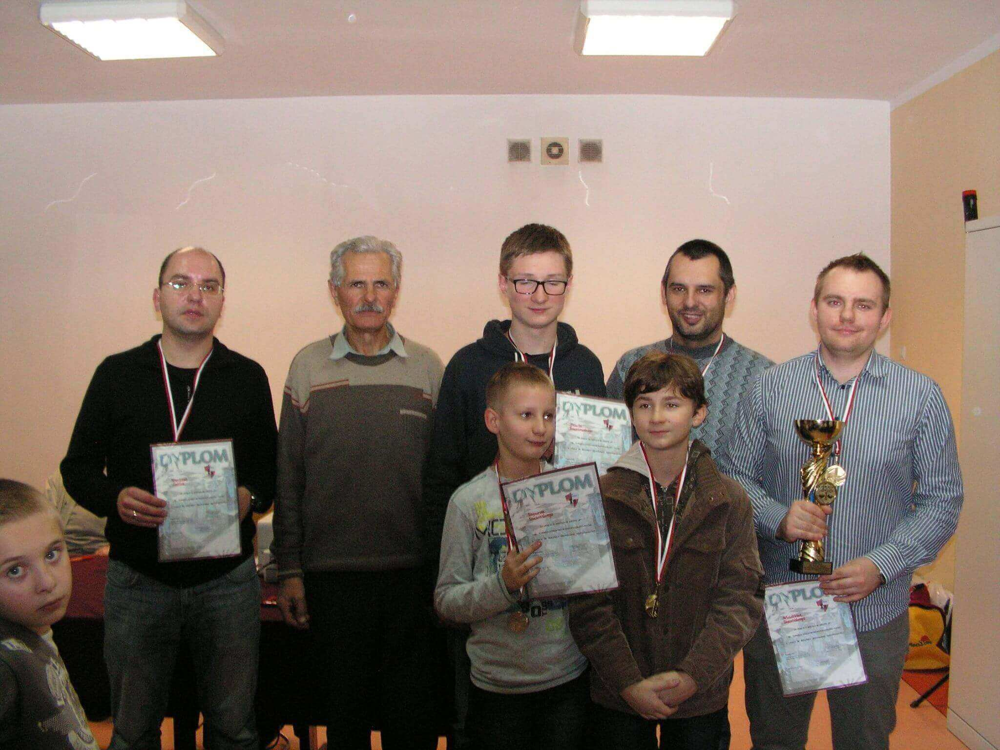

Prowadzona przez instruktora Marka Niedźwieckiego, sędziego szachowego, autora książek szachowych („Twój pierwszy ruch”, „Poznaj smak szachów. Tomik I. Mat w jednym posunięciu” oraz „Poznaj smak szachów. Tomik II. Mat w dwóch posunięciach”), koordynatora „Radomskiego programu powszechnej nauki gry w szachy”, prezesa Akademii Szachowej Marka Niedźwieckiego.
Zadzwoń

Szanowni Państwo. UKS Roszada na początku 2019 roku podpisał porozumienie o współpracy z Fundacją Studencką Młodzi Młodym. Dzięki temu otrzymaliśmy darowiznę w wysokości 2 546,91 zł na potrzeby organizacji turniejów szachowych i szkolenia zawodników w naszym Klubie. Zakupiliśmy aparat fotograficzny, który wykorzystujemy do wykonywania dokumentacji fotograficznej z turniejów szachowych, a także książkę szachową do szkolenia juniorów.

 



♚ Propagowanie gry w szachy, organizacja turniej√≥w
i symultan.
♛ Po≈ǃÖczenie ludzi i grup w celu edukowania zasad
gry w szachy.
♜ Wspieranie inicjatyw lokalnych w tworzeniu miejsc do gry
w szachy.
♝ Popularyzowanie szach√≥w wśr√≥d dzieci i m≈Çodzie≈ºy
radomskich szkół i innych radomskich środowisk, a także
integracja oraz sportowa rywalizacja.
♞ Rozw√≥j pozytywnych zainteresowa≈Ñ.
♟ Przeciwdzia≈Çanie patologiom spo≈Çecznym.
♔ Promocja dobrego zachowania, kulturalne spędzanie wolnego
czasu.
♕ Aktywizacja nauczycieli w szko≈Çach.
Prowadzimy zajęcia w sekcji szachowej i piłki nożnej.
Organizujemy liczne turnieje szachowe, szkolimy dzieci, młodzież
i dorosłych w grze szachowej. Ponadto organizujemy
warsztaty i kursy dla nauczycieli,
a w szczególności nauczających w szkołach
podstawowych w klasach 0, I, II i III dotyczące
elementarnych zasad gry w szachy.
Zajęcia odbywają się we wtorki w klubie "Kwadrat" w Radomiu ul.
Grzybowska 16 (17:30 - 18:30), oraz w środy w klubie "Radomig" w
Radomiu ul. Mazowieckiego 13 (17:30 - 18:30).


Podczas wypełniania formularza PIT, wpisz
KRS: 0000270261
oraz poniższy cel szczegółowy: UKS ROSZADA 9268
Kalendarz na 2020 r. UKS „ROSZADA” i Kapituły Kultury Szachowej
L.P. | Nazwa turnieju | Tempo gry | Ilość rund | Data | Miejsce
1. Otwarte Mistrzostwa UKS ROSZADA P'5 9 15.01.2020 Radomig, ul. Mazowieckiego 13a
2. IV Turniej Szachowy „Świętego Kazimierza - Patrona Radomia” P'5 9 19.02.2020 Radomig, ul. Mazowieckiego 13a
3. V Turniej Szachowy „Pamięci Ofiar Zbrodni Katyńskiej” P'5 9 18.03.2020 Radomig, ul. Mazowieckiego 13a
4. Turniej Szachowy 3 Maja P'5 9 15.04.2020 Radomig, ul. Mazowieckiego 13a
5. IV Turniej Szachowy „Radomski Czerwiec' 76” P'5 9 17.06.2020 Radomig, ul. Mazowieckiego 13a
6. Turniej Szachowy z okazji 410 Rocznicy „Zwycięskiej bitwy pod Kłuszynem im. hetmana Stanisława Żółkiewskiego rozegranej 4 lipca 1610 roku P'5 9 15.07.2020 Radomig, ul. Mazowieckiego 13a
7. IV Turniej Szachowy PAMIĘCI OFIAR AGRESJI WRZEŚNIOWEJ 1939 ROKU NA POLSKĘ P'5 9 2.09.2020 Radomig, ul. Mazowieckiego 13a
8. Turniej Szachowy z okazji „Bitwy pod Orszą” rozegranej 8 września 1514 roku P'5 9 9.09.2020 Radomig, ul. Mazowieckiego 13a
9. Turniej Szachowy „Bitwy pod Wiedniem” im. Króla Jana III Sobieskiego rozegranej 12 września 1683 roku P'5 9 16.09.2020 Radomig, ul. Mazowieckiego 13a
10. IV Turniej Szachowy Ogłoszenia Niepodległości przez Polskę im. Gen. Tadeusza Jordan – Rozwadowskiego P;5 9 7.10.2020 Radomig, ul. Mazowieckiego 13a
11. IV Memoriał Szachowy „Herbu Radomia” im. Stanleya Krol P'5 9 14.10.2020 Radomig, ul. Mazowieckiego 13a
12. XVII Turniej Szachowy „Odwaga - Miłość – Pokój” z okazji 42 Rocznicy Wyboru kardynała Karola Wojtyły na Papieża P'5 9 21.10.2020 Radomig, ul. Mazowieckiego 13a
13. V Otwarty Turniej Szachowy Pracowników Budownictwa, Przemysłu Materiałów Budowlanych i Przemysłu Drzewnego im. architekta Kazimierza Prokulskiego P'5 9 4.11.2020 r. Radomig, ul. Mazowieckiego 13a